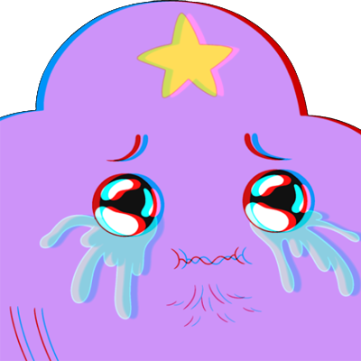
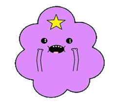

 
| Предмет | Преподователь | Оценка |
|---|---|---|
| Компьютерные сети | Трубаэв А.И. | 5 |
| Охрана труда | Кузьменко Е.А. | 5 |
| Математические методы | Иглин С.П. | 5 |
| Колебания механических систем | Трубаэв А.И. | 5 |
| Физическое воспитание | Федорина Т.Э. | 5 |
| Технология создания програмного продукта | Ларин А.А. | 5 |
Только то, что однажды вы потерпели неудачу, еще не означает, что вы будете терпеть неудачу во всем.
Мерлин Монро
Один из районов города – Салтовка – это самый большой спальный район по количеству зарегистрированных жителей в нём по Украине. Более того, здесь проживает четвертая часть от всего населения города. Для примера – состоянием на первое июля 2015 года в Виннице зарегистрировано 369 тысяч человек, что как минимум на 30 тысяч меньше, чем на Салтовке.
Для посетителей зоопарк открыл двери впервые в 1903 году, тогда как основан он был в 1895, восемью годами ранее. Он же стал первым на территории Украины. Изначально на арендованной у Харьковского университета земле располагалась выставка зверей и птиц, однако с 1911 года его постепенно начали заселять дикими животными. С 1930 года территория зоопарка не изменилась – сегодня она составляет 22 гектара.
В 2010 году город красовался множеством билбордов с такой надписью. Что, разумеется, харьковчане восприняли как констатацию факта. Но мало кто знает, что по версии журнала «Фокус», Харьков заслужил гордость называться лучшим городом для жизни. Правда, уже в 2011 разделил это звание с Киевом.